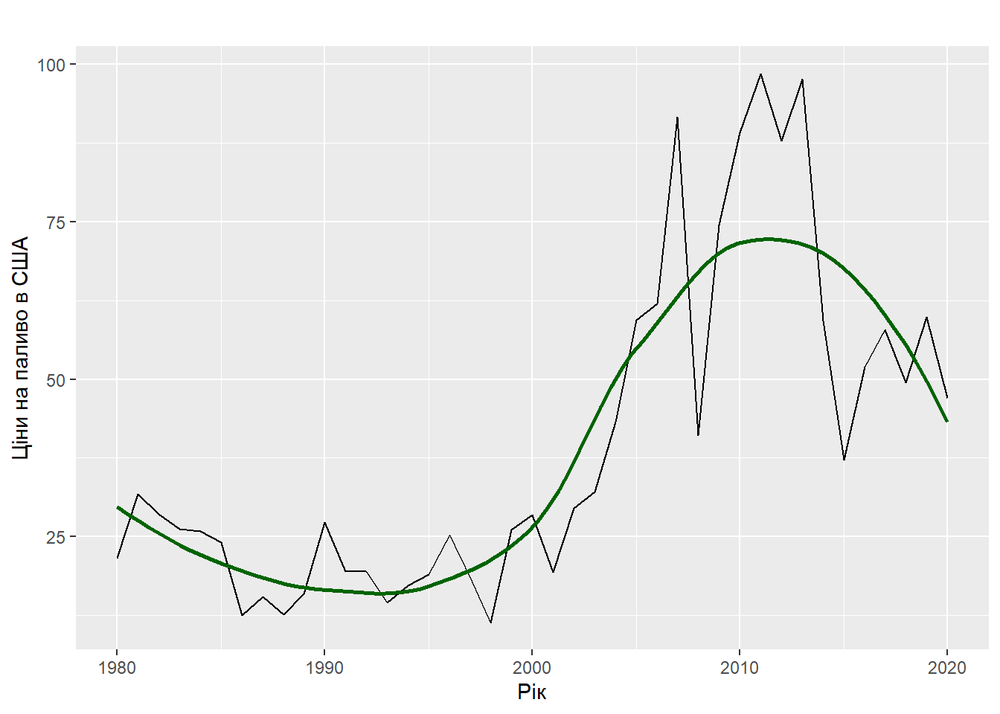
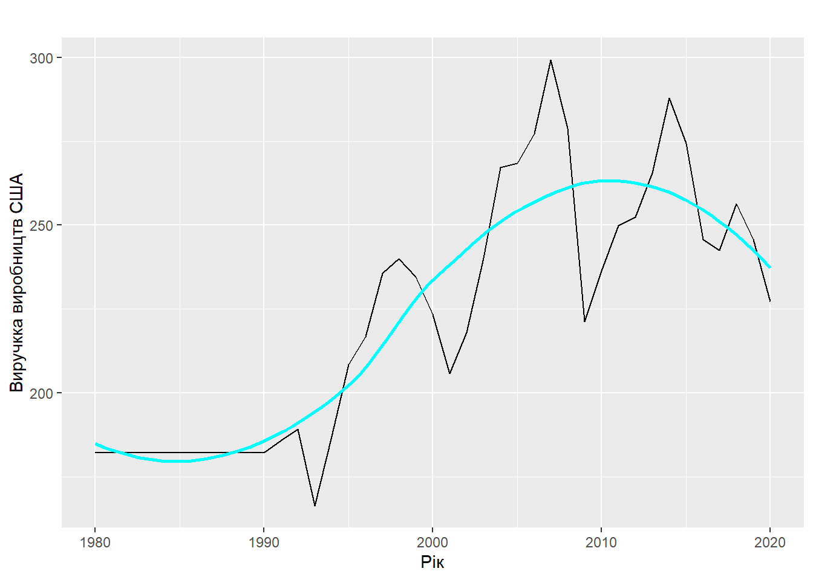
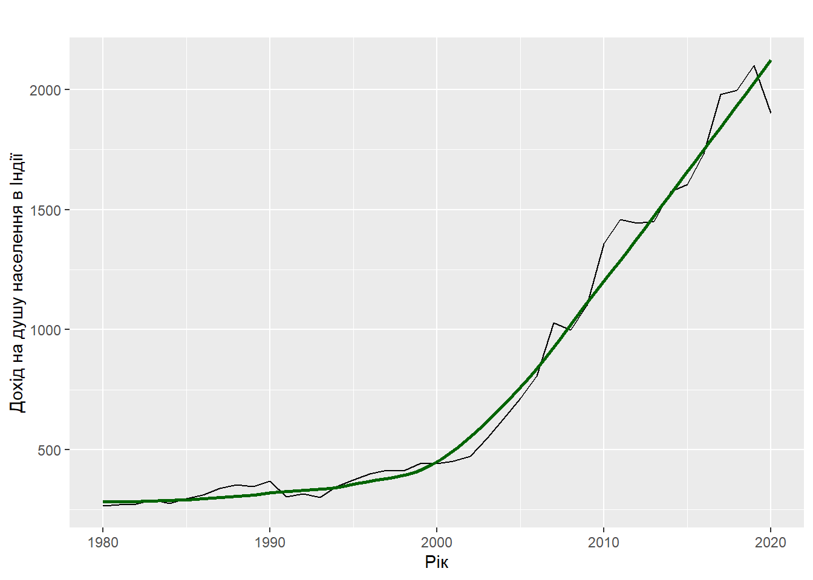
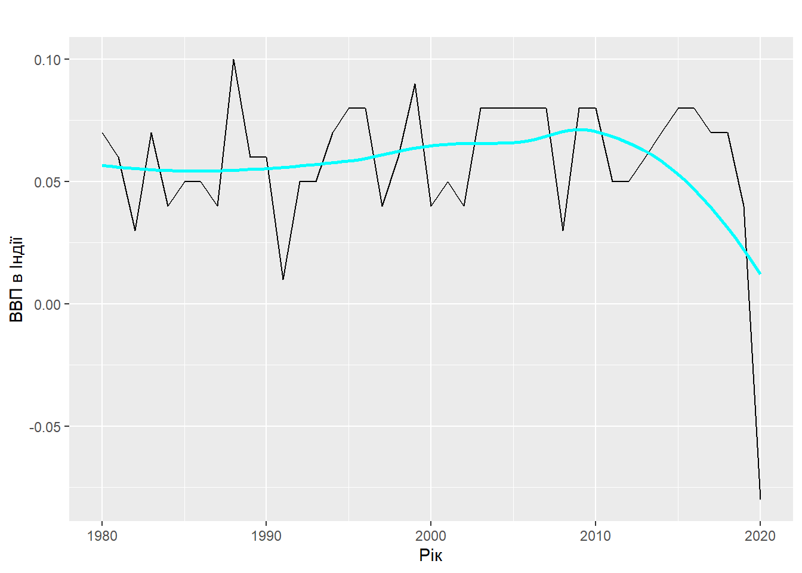

Warning: There was 1 warning in `mutate()`.
ℹ In argument: `year = as_date(paste(year, "01", "01", sep = "-"),
"%Y-%m-%d")`.
Caused by warning:
! `tz` argument is ignored by `as_date()`
as.tibble(timePeriodModel)
Warning: `as.tibble()` was deprecated in tibble 2.0.0.
ℹ Please use `as_tibble()` instead.
ℹ The signature and semantics have changed, see `?as_tibble`.
# A tibble: 369 × 14
stock.index country year index.price log_indexprice inflationrate
<chr> <chr> <date> <dbl> <dbl> <dbl>
1 NASDAQ United State… 1980-01-01 169. 2.23 0.14
2 NASDAQ United State… 1981-01-01 203. 2.31 0.1
3 NASDAQ United State… 1982-01-01 189. 2.28 0.06
4 NASDAQ United State… 1983-01-01 285. 2.46 0.03
5 NASDAQ United State… 1984-01-01 249. 2.4 0.04
6 NASDAQ United State… 1985-01-01 290. 2.46 0.04
7 NASDAQ United State… 1986-01-01 367. 2.56 0.02
8 NASDAQ United State… 1987-01-01 403. 2.6 0.04
9 NASDAQ United State… 1988-01-01 374. 2.57 0.04
10 NASDAQ United State… 1989-01-01 438. 2.64 0.05
# ℹ 359 more rows
# ℹ 8 more variables: oil.prices <dbl>, exchange_rate <dbl>, gdppercent <dbl>,
# percapitaincome <dbl>, unemploymentrate <dbl>, manufacturingoutput <dbl>,
# tradebalance <dbl>, USTreasury <dbl>
Робимо вибірку для в окремі змінні для 2-ох країн: США та Індія. Також заповнимо пусті клітинки з NA, використовуючи функцію na_interpolation
США
Перетворимо дані в часовий ряд за допомогою функції ts()
ts_USA <-ts(4:14, data = USA_tpm,start=c(1980, 1), end=2020, frequency=6)
Durbin-Watson test
data: USA_lm
DW = 0.76368, p-value < 2.2e-16
alternative hypothesis: true autocorrelation is greater than 0
Інтерпритація таких графіків доволі проста. На даному графіку спостерігається значення автокорильованих залишків, що взаємодіють між собою. Вісь х відповідає різним лагам, тобто числу псріодів, за якими розраховується коефіцієнт автокореляції, а вісь у показує кореляцію для кожного з відставань. Пунктирна блакитна лінія покаїзує рівень значущості.
Перша вертикальна лінія, де лаг— 0, показує кореляцію залишків із самим собою, тому завжди 100%-ва.При відсутності автокореляції наступні вертикальні смуги будуть швидко спадати
Також перевірити наявність цього явища можна за допомогою тесту Д-В
Тест Дарбіна-Вотсона - це статистичний тест на автокореляцію ряду залишків після регресійного аналізу. Він дозволяє виявити наявність автокореляції першого порядку в залишках регресійної моделі.
Як бачимо з результатів тесту у моделі присутня позитивна автокореляція
Створення часового ряду для візуалізації окремих показників: індекс ціни, ціну на нафту та виручку виробництв
ts_USA_logindex <-ts(USA_tpm$log_indexprice, start =c(1980, 1), end =2020)USA_plot_1 <-autoplot(ts_USA_logindex, xlab ="Рік", ylab ="Індекс ціни в США") +geom_smooth(se =FALSE, color ="blue")ts_USA_index <-ts(USA_tpm$index.price, start =c(1980, 1), end =2020)USA_plot_2 <-autoplot(ts_USA_index, xlab ="Рік", ylab ="Логарифм індексу цін в США ") +geom_smooth(se =FALSE, color ="red")grid.arrange(USA_plot_1, USA_plot_2, ncol =2)
`geom_smooth()` using method = 'loess' and formula = 'y ~ x'
`geom_smooth()` using method = 'loess' and formula = 'y ~ x'
ts_USA_oil <-ts(USA_tpm$oil.prices, start =c(1980, 1), end =2020)autoplot(ts_USA_oil, xlab ="Рік", ylab ="Ціни на паливо в США") +geom_smooth(se =FALSE, color ="darkgreen")
`geom_smooth()` using method = 'loess' and formula = 'y ~ x'

ts_USA_manuf <-ts(USA_tpm$manufacturingoutput, start =c(1980, 1), end =2020)autoplot(ts_USA_manuf, xlab ="Рік", ylab ="Виручкка виробництв США") +geom_smooth(se =FALSE, color ="cyan")
`geom_smooth()` using method = 'loess' and formula = 'y ~ x'

Індія
Перетворимо дані в часовий ряд
ts_India <-ts(4:14, data = India_tpm,start=c(1980, 1), end=2020, frequency=6)
Durbin-Watson test
data: USA_lm
DW = 0.76368, p-value < 2.2e-16
alternative hypothesis: true autocorrelation is greater than 0
Створення часового ряду для візуалізації окремих показників: індекс ціни, відсоток ВВП та дохід на душу населення.
ts_India_logindex <-ts(India_tpm$log_indexprice, start =c(1980, 1), end =2020)India_plot_1 <-autoplot(ts_India_logindex, xlab ="Рік", ylab ="Індекс ціни в Індії") +geom_smooth(se =FALSE, color ="blue")ts_India_index <-ts(India_tpm$index.price, start =c(1980, 1), end =2020)India_plot_2 <-autoplot(ts_India_index, xlab ="Рік", ylab ="Логарифм індексу цін в Індії ") +geom_smooth(se =FALSE, color ="red")grid.arrange(India_plot_1, India_plot_2, ncol =2)
`geom_smooth()` using method = 'loess' and formula = 'y ~ x'
`geom_smooth()` using method = 'loess' and formula = 'y ~ x'
ts_India_income <-ts(India_tpm$percapitaincome, start =c(1980, 1), end =2020)autoplot(ts_India_income, xlab ="Рік", ylab ="Дохід на душу населення в Індії") +geom_smooth(se =FALSE, color ="darkgreen")
`geom_smooth()` using method = 'loess' and formula = 'y ~ x'

ts_India_gdp <-ts(India_tpm$gdppercent, start =c(1980, 1), end =2020)autoplot(ts_India_gdp, xlab ="Рік", ylab ="ВВП в Індії") +geom_smooth(se =FALSE, color ="cyan")
`geom_smooth()` using method = 'loess' and formula = 'y ~ x'

Динамічна модель
Динамічна модель є математичною моделлю, яка використовується для аналізу процесів, що змінюються в часі. Наприклад, часовий ряд, який відображає зміни якоїсь змінної відносно часу. У динамічній моделі вони описуються не тільки за допомогою попередніх значень, але й за допомогою змінних, які залежать від змінних попередніх періодів. Вони називаються лаговими змінними, а їх кількість - лагами. Таким чином, динамічна модель дозволяє врахувати залежність між змінними в часі, що дозволяє більш точно описати реальні процеси.
Модель з лаговими незалежними змінними
Створюємо модель, використовуючи у ній lag(), функцію для створення лагових змінних з кількістю лагів, вказаних у параметрі k